One of my most productive days was throwing away 1000 lines of code.
—Ken Thompson
Informatie halen uit een databestand via SQL
Bestaande datasets
We zagen in het vorig hoofdstuk hoe je zelf gegevens (data) kan toevoegen
aan een tabel via INSERT INTO. In het inleidend voorbeeld
namen we gegevens van OPO’s over uit de programmagids met de ECTS fiches
van onze opleiding TI. Soms zijn die gegevens echter al door andere mensen
verzameld en kan je die vinden op websites. We spreken dan over datasets.
Als voorbeeld voor dit deeltje nemen we een dataset die enkele gegevens
i.v.m. internetgebruik per land beschikbaar stelt. Bekijk op Kaggle de
pagina https://www.kaggle.com/datasets/ ramjasmaurya/1-gb-internet-price. Op deze pagina stelt gebruiker ‘Ram Jas Maurya’ gegevens ter
beschikking over ‘Internet Prices around 200+ countries in 2022’. De data
wordt beschikbaar gesteld in het Public Domain
(dus geen copyright). Je mag deze dataset dus zonder probleem gebruiken.
Wat we jammer genoeg niet terugvinden zijn bronnen. Het zou een
natuurlijke reflex moeten zijn dat je altijd op zoek gaat naar bronnen.
Waar komen de gegevens die deze auteur in deze dataset verzamelt vandaan?
We doen even een kleine check met een getal dat we zelf gemakkelijk kunnen
opzoeken. België heeft (volgens Wikipedia, bron Statbel) op 1 januari 2022
ongeveer 11,6 miljoen inwoners. Deze dataset vermeldt als aantal inwoners
het getal 11,5 miljoen. Dat ligt redelijk dicht in de buurt. Waar de
informatie over de internetprijzen van 1 GB data gehaald is, daar heb je
echter het raden naar. Bij de opmerkingen bij deze dataset op Kaggle lees
je trouwens analoge opmerkingen.
We willen in dit hoofdstuk echter de klemtoon leggen op
didactisch gebruik van een CSV-dataset
en dan kan dit wel dienen. Zolang we hieruit maar geen ‘absolute waarheden’
willen besluiten ...
Bij het schrijven van dit stukje (14 augustus 2022) zijn er vier datasets
beschikbaar. We zijn vooral geïnteresseerd in ‘all_csv sorted.csv’ (versie
7 op het moment van schrijven). Deze dataset combineert de drie andere in
één grotere dataset met een dikke 200 rijen en 13 kolommen. Het bestand
bevat gegevens over de gemiddelde, minimum en maximum prijs van 1 GB data
in 2022 en de gemiddeldes in de twee vorige jaren (indien beschikbaar).
Ook vind je er het aantal internetgebruikers en inwoners van elke land en
de gemiddelde snelheid van een verbinding in Mbit/s. Zoals al vermeld en
toch wel belangrijk: we hebben geen idee waar de gegevens vandaan komen, dus deze data voorzichtig gebruiken.
Mogelijk opent deze dataset dan gewoon in je browservenster. Ofwel
geef je expliciet de opdracht om het gelinkte bestand apart te
downloaden, ofwel selecteer je heel de inhoud van je browserscherm
(Win: CTRL + A, Mac: CMD + A) en kopieert en plakt deze inhoud in een
nieuw tekstbestand.
Bewaar het bestand als ‘internetprijzen.csv’.
CSV-bestanden
Een CSV-bestand (‘Comma Separated Values’) is een gewoon tekstbestand dat handig is om gegevens uit te wisselen tussen verschillende applicaties.
Je kan bvb een Excelbestand exporteren in dit formaat. Tussen elke kolomwaarde
staat dan een scheidingsteken (dat je vaak zelf kan kiezen) zoals een komma,
puntkomma enz. Elke rij begint dan op een nieuwe regel. Het net gedownloade
bestand ziet er als volgt uit:
S.NO,Country code,Country,Continental region,NO. OF Internet Plans,Average price of 1GB (USD),Cheapest 1GB for 30 days (USD),Most expensive 1GB (USD),Average price of 1GB (USD at the start of 2021),Average price of 1GB (USD – at start of 2020),Internet users,Population,"Avg
(Mbit/s)Ookla"
0,IL,Israel,NEAR EAST,27,0.05,0.02,20.95,0.11,0.9,"6,788,737","8,381,516",28.01
1,KG,Kyrgyzstan,CIS (FORMER USSR),20,0.15,0.1,7.08,0.21,0.27,"2,309,235","6,304,030",16.3
2,FJ,Fiji,OCEANIA,18,0.19,0.05,0.85,0.59,3.57,"452,479","883,483",25.99
3,IT,Italy,WESTERN EUROPE,29,0.27,0.09,3.54,0.43,1.73,"50,540,000","60,627,291",37.15
…
De eerste lijn van een CSV-bestand bevat meestal een soort kolomhoofding, in dit geval:
een getal (soort serienummer),
landcode met twee letters,
naam van het land,
regio,
aantal verschillende internetformules,
gemiddelde prijs van 1GB,
goedkoopste prijs voor hetzelfde,
duurste prijs,
gemiddeldes voor beide vorige jaren,
aantal internetgebruikers,
aantal inwoners,
gemiddelde datasnelheid.
Aangezien dit een tekstbestand is, kan je het openen, bekijken en
manipuleren met een editor. Je kiest zelf welke editor je
hiervoor gebruikt, maar in dit voorbeeld zullen we Visual Studio Code (‘VS Code’) gebruiken, een editor die je ongetwijfeld in andere OPO’s
(front-end) ook gebruikt. Voorstel: installeer in VS Code de extensie ‘Edit
CSV’ gemaakt door een zekere janisdd. Deze extensie laat toe om in een
rekenbladachtige voorstelling met rijen en kolommen de data te bekijken
en te manipuleren.
Een tweede nuttige extensie voor CSV-bestanden is ‘Rainbow CSV’.
Hierdoor krijgen de verschillende kolommen een andere kleur en zijn ze
zo beter van elkaar te onderscheiden. Installeer ook deze extensie in
VS Code.
De twee screenshots hieronder tonen het oorspronkelijk CSV-bestand
zonder en met de extensie ‘Rainbow CSV’. De gekleurde versie is een
stuk leesbaarder, niet?
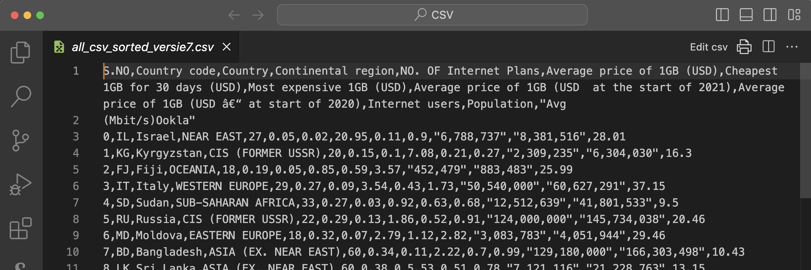
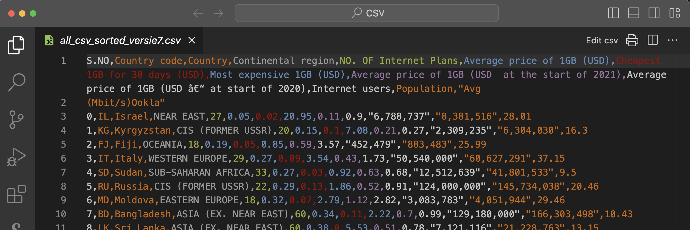
Opgepast: er is een klein foutje omdat er een enter staat tussen ‘Avg’
en ‘(Mbit/s)Ookla’. Haal die zeker weg zodat de volledige hoofding
enkel op de eerste rij staat!
Als deze extensies geïnstalleerd zijn, open je het csv bestand en klik
je rechtsboven op ‘Edit csv’. Je krijgt nu volgende voorstelling van
het bestand:
Een dataset is zelden zonder aanpassingen bruikbaar. Ook in deze dataset
staan wat vervelende dingen die ervoor zorgen dat deze data niet zomaar in
te laden valt in een tabel.
Overbodige kolommen
Je kan enkel CSV-data inladen in een bestaande tabel. Die moet je
dus eerst definiëren. Je weet ondertussen al dat elke tabel een primaire sleutel
moet hebben: een veld (of combinatie van velden) dat voor elke rij uniek is.
De eerste kolom uit deze dataset bevat een oplopend geheel getal (we zullen
dit later een ‘technische sleutel’ noemen). Dat zou zeker kunnen dienen, maar laten we toch eens verder kijken.
De tweede kolom bevat een landcode die bestaat uit twee letters. Die
landcode is gegarandeerd uniek als ze de standaard volgt. Eigenlijk is het dan een
beter idee om deze tweede kolom als primaire sleutel te gebruiken voor
onze tabel
.
De eerste kolom bevat dan eigenlijk nutteloze informatie. Ze kan best
verwijderd worden uit het bestand. De extensie ‘Edit CSV’ die je
installeerde in VS Code maakt dit gemakkelijk. Als je het nog niet
eerder deed, klik je rechtsboven op ‘edit csv’. Je krijgt dan een
kolombeeld van het bestand. Ga met de muis over de hoofding ‘column 1’.
Een vuilbak-icoontje verschijnt. Klik hierop om deze kolom te
verwijderen.
De meest gebruikte karaktercodering is UTF-8. Dat is de standaardcodering
van je browser, van VS Code, … Ook in een database server kan je je
karaktercodering kiezen. Laten we afspreken dat we voor alles UTF-8 zullen
kiezen. Er zijn enkele namen van landen die speciale karakters bevatten
zoals é, ô enz. Laten we die manueel aanpassen. Als je last hebt om die
karakters te vinden op je toetsenbord kan je ze altijd kopiëren van een
bestand dat die karakters wel correct heeft. Of je kiest voor de
gemakkelijkheidsoplossing en laat alle accenten weg, maar dat vind ik dan
weer niet correct.
Pas de volgende dingen aan (tenzij ze bij jou natuurlijk wel goed
staan):
rij 35: Réunion
rij 125: Saint Barthélemy (St. Barts)
rij 131: Côte d’Ivoire
rij 139: een moeilijke … Zweedse hoofdletter Åland Islands (maak
eventueel gewoon een kopie van deze letter)
rij 199: Curaçao
en tenslotte de moeilijkste op rij 229: São Tomé and Príncipe.
Daarmee is dit stukje van het ‘data cleaning’ in orde. We kunnen ons
nog wel afvragen of we de eerste rij nodig hebben. Die zou in principe weg
mogen, maar ze bevat wel nuttige info die nodig is om de tabel straks te definiëren.
Bovendien kunnen we later bij het importeren aanduiden dat de eerste rij niet
mag geïmporteerd worden.
Voor alle veiligheid toch maar best deze veranderingen bewaren in VS
Code: ‘Apply changes to file and save’ (zie onderstaande screenshot).
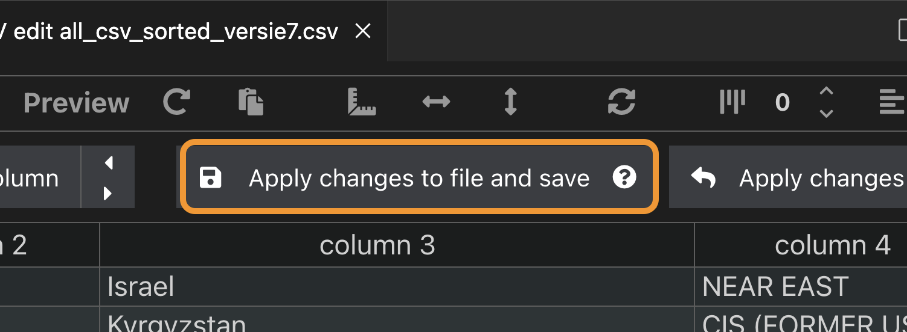
Ontbrekende info
Vanaf rij 233 (‘Kersteiland’) ontbreekt er veel informatie: ofwel zijn
er geen providers, ofwel is de munteenheid waarmee kosten uitgedrukt
worden zo onstabiel dat het niet in dollar kan omgerekend worden.
Laten we al deze rijen (dus vanaf ‘Christmas Island’ tot ‘Zimbabwe’)
verwijderen uit dit voorbeeld. Dat kan in de kolomversie, maar
eigenlijk is het simpeler in de tekstversie want in de kolomlayout
moet je het rij per rij doen.
Overloop nog eens alles. Hier en daar valt de omschrijving ‘NO
PACKAGES’ op. Het gaat dan vaak om piepkleine landen. Laten we die
rijen ook verwijderen uit de dataset. Meer bepaald volgende vijf
landen (rijen) mogen weg: ‘Cook Islands’, ‘Vanuatu’, ‘Tuvalu’, ‘Cuba’
(beetje jammer want dit is toch wel een groot land) en ‘Cocos
(Keeling) Islands’. Verwijder nu deze rijen (best in de tekstversie,
doe een zoekopdracht naar ‘PACK’) en bewaar het bestand een laatste
keer.
Verschillende getalnotatie
Bemerk dat de grote getallen die inwoners en gebruikers voorstellen de
Angelsaksische notatie gebruiken: duizendtallen worden gescheiden door een
komma terwijl het scheidingsteken tussen eenheid en decimalen hier de punt
is en niet de komma. Die punt, dat is geen probleem, maar de
komma tussen getallen gaat een probleem vormen bij het importeren van de
data
. We willen enkel de cijfers en geen scheidingsteken voor
duizendtallen, miljoenen enz.
Dit wordt bemoeilijkt door het feit dat we niet zomaar alle komma’s kunnen
weglaten, want die komma is net het scheidingsteken tussen de
verschillende kolommen. En ik moet eerlijk toegeven dat ik bij het
voorbereiden van deze lestekst een flink stuk heb zitten knoeien met
Excel. Dat was mijn eerste plan: deze gegevens importeren in Excel, daar
bewerken en dan terug exporteren als CSV. Klinkt heel simpel, maar het
viel toch lelijk tegen.
Het beste wat je kan doen als het niet lukt is even gaan wandelen …
Toen ik terugkwam zag ik ineens dat het echt wel heel eenvoudig kan
in VS Code zelf
. De aanzet tot een oplossing staat in één van de vorige alinea’s.
Voer nu het volgende uit:
Het scheidingsteken tussen de kolommen is de komma. Een CSV-bestand
kan echter ook andere tekens als scheidingsteken gebruiken. Dat kunnen
we instellen via de VS Code extensie. Kies dus opnieuw ‘Edit csv’.
Bovenaan het venster heb je ‘Write options’. Kies bij de write opties
als scheidingsteken (‘Delimiter’) de puntcomma (‘;’). Pas toe en
bewaar via de knop ‘Apply changes to file and save’. Sluit beide .csv
bestanden (het originele en het ‘edit CSV’) in VS Code en open het
originele .csv bestand opnieuw om de aanpassing te bekijken. De CSV
file gebruikt nu de ; tussen twee kolommen:
Country code;Country;Continental region;NO. OF Internet Plans;Average price of 1GB (USD); Cheapest 1GB for 30 days (USD);Most expensive 1GB (USD);Average price of 1GB (USD at the start of 2021);Average price of 1GB (USD at start of 2020); Internet users;Population;"Avg (Mbit/s)Ookla"
IL;Israel;NEAR EAST;27;0.05;0.02;20.95;0.11;0.9;6,788,737;8,381,516;"28.01"
KG;Kyrgyzstan;CIS (FORMER USSR);20;0.15;0.1;7.08;0.21;0.27;2,309,235;6,304,030;"16.3"
FJ;Fiji;OCEANIA;18;0.19;0.05;0.85;0.59;3.57;452,479;883,483;"25.99"
…
De enige komma’s die nu nog overblijven zijn die tussen de duizendtallen,
miljoentallen enz. Die kunnen dus zonder probleem met een
zoek/vervang opdracht
in VS Code (zie onderstaande figuur) worden verwijderd.
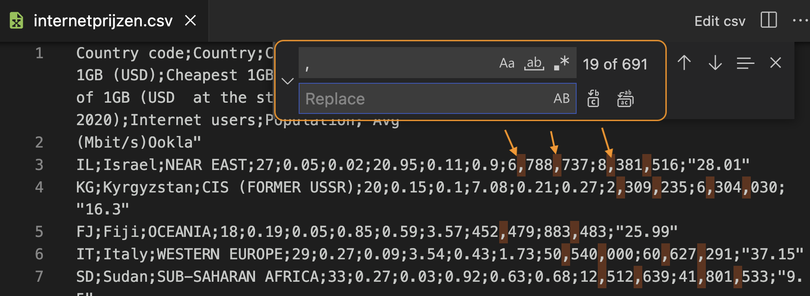
In het zoekveld geef je de komma in, het vervangveld laat je leeg (dus
geen spatie). De knoppen aan de rechterkant laten toe om de vervanging
één per één te doen of alles in één keer. In de tekst zelf zie je alle
komma’s die zullen verwijderd worden. Dat ziet er goed uit, dus doe maar
alles in één keer. Als het fout loopt, geen paniek: Undo!
Ook de dubbele aanhalingstekens ("…") rond sommige getallen moeten weg. We
willen immers deze gegevens als een getal inlezen in de databank omdat we
ermee willen rekenen. Het mogen dus geen strings zijn om in te lezen.
Verwijder alle dubbele aanhalingstekens met een zoek / vervang opdracht
in VS Code via Edit > Replace.
Na het verwijderen van deze twee karakters ziet het eindresultaat er zo
uit:
Country code;Country;Continental region;NO. OF Internet Plans;Average price of 1GB (USD);Cheapest 1GB for 30 days (USD);Most expensive 1GB (USD);Average price of 1GB (USD at the start of 2021);Average price of 1GB (USD at start of 2020); Internet users;Population;Avg (Mbit/s)Ookla
IL;Israel;NEAR EAST;27;0.05;0.02;20.95;0.11;0.9;6788737;8381516;28.01
KG;Kyrgyzstan;CIS (FORMER USSR);20;0.15;0.1;7.08;0.21;0.27;2309235;6304030;16.3
FJ;Fiji;OCEANIA;18;0.19;0.05;0.85;0.59;3.57;452479;883483;25.99
IT;Italy;WESTERN EUROPE;29;0.27;0.09;3.54;0.43;1.73;50540000;60627291;37.15
SD;Sudan;SUB-SAHARAN AFRICA;33;0.27;0.03;0.92;0.63;0.68;12512639;41801533;9.5
RU;Russia;CIS (FORMER USSR);22;0.29;0.13;1.86;0.52;0.91;124000000;145734038;20.46
MD;Moldova;EASTERN EUROPE;18;0.32;0.07;2.79;1.12;2.82;3083783;4051944;29.46
…
Het bestand is nu klaar om geïmporteerd te worden in een tabel. Hoog tijd
dus om die tabel nu aan te maken.
Schema en tabel creëren via pgAdmin
In pgAdmin heb je in de databank die bij je reeks hoort al een schema met
als naam je studentennummer ‘rxxxxxxxx’. In dit schema komt nu een nieuwe
tabel ‘internetprijzen’ (je kan in je schema zoveel tabellen aanmaken als
je wil). We overlopen even alle kolommen:
De landcode (kolom 1) is een string van twee karakters, dus char(2). Die is verplicht want het wordt onze primaire sleutel.
De naam van het land (kolom 2) en de regio (kolom 3) zijn
onbepaald qua lengte. Dat worden dus varchar(). Kies zelf
het aantal karakters voor beide dat voldoende is om alle namen te
bewaren (zoek naar de langste string). Beiden zijn verplicht.
Het aantal internetformules (kolom 4) is een klein geheel getal.
Het datatype smallint volstaat zeker. Ook een verplicht veld.
De volgende drie kolommen zijn gemiddelde prijs, minimumprijs en
maximumprijs voor 1 GB data. Dat zijn verplichte velden die een
getal in dollar voorstellen. Een geschikt datatype hiervoor is numeric(5,2). Hierin is 5 het totaal aantal cijfers en 2 het aantal cijfers achter
de decimale punt (dus een bedrag afgerond op 1 dollarcent). Alle drie de
waarden worden telkens aangegeven in de dataset.
Kolommen 8 en 9 zijn gemiddelde prijzen van de twee vorige jaren. Ook daar is de keuze voor numeric(5,2) prima. Er is wel een
klein probleem als je naar de dataset kijkt. Deze getallen zijn niet voor
elke rij aangegeven.Hier gaan we dus de eis van NOT NULL niet
toevoegen. Deze velden mogen dus wel degelijk leeg blijven bij het importeren
van alle gegevens.
Kolommen 10 en 11 zijn het aantal internetgebruikers en het
aantal inwoners
. Het gaat dus om grote gehele getallen dus is integer een geschikt
datatype. Ga zelf na of alle rijen deze info hebben. Als dat zo is, dan
mag je eisen dat deze velden niet leeg mogen blijven.
De laatste kolom tenslotte is ook weer zo’n kolom die niet altijd bekend
is, nl. de gemiddelde datasnelheid. Ook dit zou een numeric(5,2) mogen worden.
Maak nu als oefening deze nieuwe tabel aan met een CREATE
statement. Enkele typische fouten die dikwijls terugkomen:
Kolomnamen met spaties gebruiken: slecht idee. Op zich kan het wel,
maar dan moet je de naam altijd tussen dubbele aanhalingstekens
zetten ("..."). Een betere oplossing is woorden aan elkaar schrijven
of een laag streepje (underscore) gebruiken.
Vergeten een primaire sleutel te definiëren.
CREATE SCHEMA u0012047; -- vermoedelijk niet meer nodig want je schema bestaat al (vorige les)
SET search_path to u0012047; -- want anders zit je in public te werken!
CREATE TABLE internetprijzen (
landcode char(2) NOT NULL,
naam varchar(60) NOT NULL,
regio varchar(50) NOT NULL,
aantal smallint NOT NULL,
gem_prijs numeric(5,2) NOT NULL,
min_prijs numeric(5,2) NOT NULL,
max_prijs numeric(5,2) NOT NULL,
gem_21_prijs numeric(5,2),
gem_20_prijs numeric(5,2),
internetgebruikers integer,
inwoners integer,
snelheid numeric(5,2),
CONSTRAINT pk_internetprijzen PRIMARY KEY ( landcode )
);
CSV importeren via pgAdmin
CSV wordt vaak gebruikt om data uit te wisselen tussen applicaties. Het ligt dan ook voor de hand dat een PostgreSQL databankserver met
CSV-bestanden kan werken. De client die we gebruiken (pgAdmin) laat toe om
deze operatie eenvoudig uit te voeren.
Over dat ‘eenvoudig’ misschien nog iets vertellen … Je zal bij het
importeren van een CSV-bestand in een tabel bijna zeker tegen een aantal
fouten botsen. Soms is een kolomdefinitie niet helemaal compatibel met de
data of bevat het CSV-bestand nog kleine foutjes enz. We hopen dat de
opkuisoperatie die we hierboven deden voldoende zal zijn om het importeren
te laten slagen.
Dat importeren gaat in pgAdmin als volgt. Klik rechts op de naam van
de pas aangemaakte tabel en kies ‘Import/Export Data… ’. In het
dialoogvenster (tabblad ‘General’) stel je nu het volgende in:
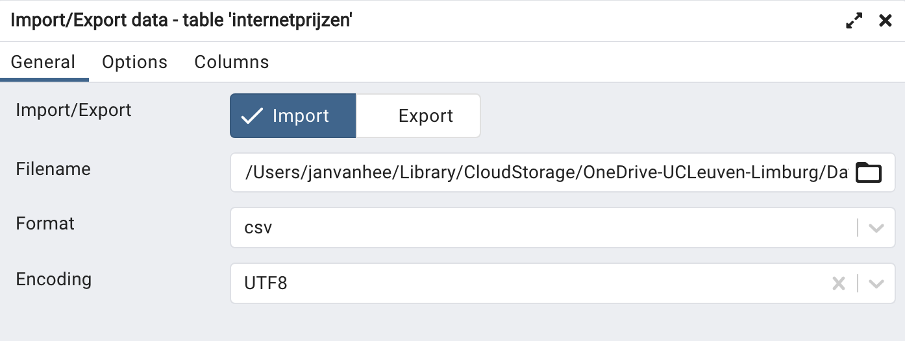
Import/Export: selecteer Import;
Filename: ga naar de .csv file die je wilt importeren
(‘internetprijzen.csv’);
Format: csv;
Encoding: UTF8.
In het tweede tabblad ‘Options’ (onderstaande figuur) pas je het
volgende aan:
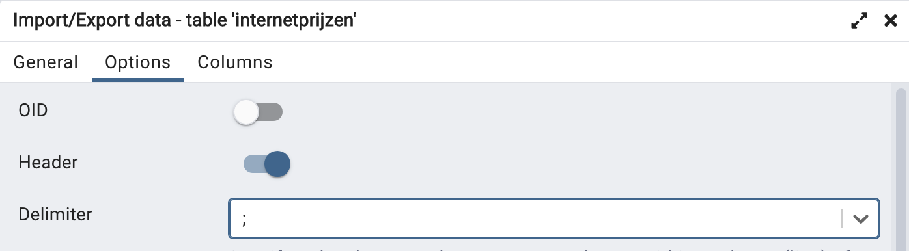
Header: aanvinken (zodat de eerste rij wordt overgeslagen);
Delimiter: kies ‘;’ als scheidingsteken;
De rest van de opties hoef je niet te veranderen.
Bevestig met OK. Als alles goed gaat worden nu alle rijen van het CSV
bestand ingelezen in rijen van de tabel.
Maar zoals gezegd … het gaat zelden helemaal goed van de eerste keer.
We dachten dat onze ‘data cleaning’ gelukt was, maar je krijgt toch
een foutmelding. Om deze foutmelding te zien, moet je eerst in het
rode kader waar er melding is van een fout klikken op ‘View
Processes’. Je krijgt dan een tabel met een regel informatie over het
net gefaalde importproces. In die regel, vlak voor de kolom ‘PID’ vind
je een icoontje ‘View Details’. Klik erop om de juiste fout te zien.
Eventueel moet je het venster vergroten om de volledige foutboodschap
te kunnen lezen. Zo'n foutmelding ziet er dan zo uit:
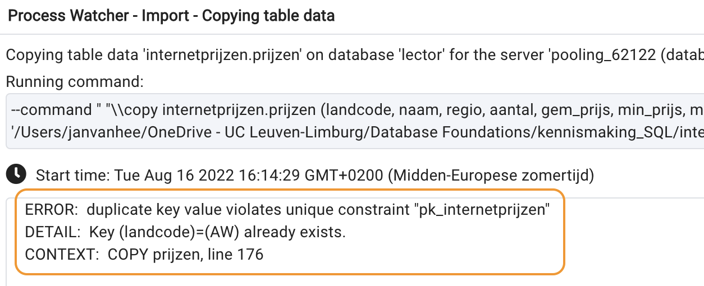
Blijkbaar komt de landcode AW (onze primaire sleutel!) twee keer voor
rond lijn 176 van het CSV-bestand.
Aangezien de primaire sleutel uniek moet zijn, geeft de
databankserver terecht een foutmelding en wordt het importeren
afgebroken.
Er wordt dan ook niets geïmporteerd.
Er is dus twee keer een land met landcode AW en dezelfde naam Aruba.
Een kort bezoek aan Wikipedia leert ons dat Aruba iets meer dan 100
000 inwoners heeft. Dat getal komt overeen met de tweede lijn. De
eerste lijn komt vermoedelijk overeen met Nederland, want dat heeft
ongeveer 17 miljoen inwoners. Misschien toch even in de CSV file gaan
kijken naar Nederland? We vinden via een zoekopdracht in VS Code het
volgende:
Op deze regel ontbreken dus het aantal internetgebruikers, het aantal
inwoners en de gemiddelde snelheid. We verwittigden op voorhand over
het gebrek aan duidelijke bronvermelding bij deze dataset. Nu
blijkt dus ook dat er fouten staan in het bestand. Vermoedelijk
is de fout best recht te zetten door de gegevens van de eerste vermelding
van AW, Aruba ... te verplaatsen naar de lijn over Nederland en daarna
die eerste lijn van Aruba te verwijderen uit het bestand.
Deze fout is simpel recht te zetten: verwijder één van beide regels in
VS Code. Vergeet niet om je bestand daarna op te slaan!
Nieuwe poging. Gelukkig krijgen we dit keer de boodschap dat het
importeren gelukt is via een groen venstertje met ‘Process completed’.
Dat vraagt om een volledig overzicht met SELECT * FROM prijzen:
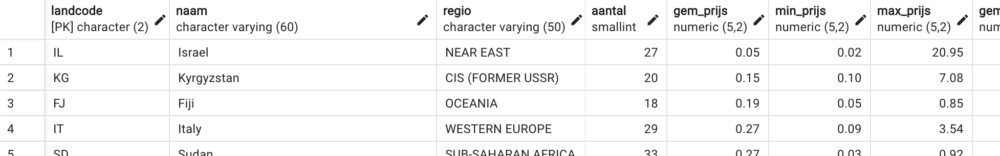
Van data naar informatie
We hebben de data (een collectie van feiten) in een tabel gezet. Nu
kunnen we via SQL deze data structureren, combineren, anders organiseren enz.
We spreken over data omzetten naar informatie.
Bij wijze van voorbeeld zoeken we een antwoord op de vraag hoe België zich
verhoudt tot andere landen op het gebied van kostprijs (in 2022) van 1 GB
data op het internet. Dat kan met volgende eenvoudige query:
SELECT naam, gem_prijs
FROM internetprijzen
ORDER BY 2 --dus van goedkoop naar duur
Test deze en volgende query's zelf uit!
België staat volgens deze gegevens pas op plaats 186. Onze
internetverbindingen zijn dus duur!
Waar staan we dan in vergelijking met onze buren in West-Europa? Ook daar
doen we het niet zo goed, want slechts drie landen (Noorwegen, Andorra en
Griekenland) zijn nog duurder dan wij, zoals volgende query toont:
SELECT naam, regio, gem_prijs
FROM internetprijzen
WHERE regio ='WESTERN EUROPE'
ORDER By 3
Oefeningen op deze dataset
De beste manier om een dataset te leren kennen is er mee spelen. Test
verschillende query’s uit. Probeer volgende oefeningen op te lossen.
Rangschikking op basis van internetsnelheid
Maak een rangschikking van alle landen op basis van internetsnelheid.
Het land met de snelste verbinding moet bovenaan staan. Toon enkel de
kolommen met de naam van het land en de snelheid. In een tweede versie
van deze query toon je alleen die landen waarvoor er effectief een
snelheid gegeven is.
Een eerste versie van de query zou dit kunnen zijn:
SELECT naam, snelheid
FROM internetprijzen
ORDER BY snelheid DESC
Je merkt in de uitvoer iets speciaals: alle rijen die NULL bevatten in de snelheidskolom worden eerst getoond. Dit is omdat PostgreSQL
NULL waarden groter beschouwt dan alle niet-NULL waarden. Dit gedrag is afhankelijk van de database: Oracle doet het net
zo, maar SQLite en MySQL doen het net omgekeerd. Die databaseservers beschouwen
NULL als een waarde die kleiner is dan alle andere waarden.
Om alleen die rijen te tonen waarvoor er effectief een snelheid
gegeven is filter je op de waarde NOT NULL:
SELECT naam, snelheid
FROM internetprijzen
WHERE snelheid IS NOT NULL
ORDER BY snelheid DESC
Land met duurste gemiddelde prijs
Welk land heeft de duurste gemiddelde prijs voor 1 GB data?
SELECT *
FROM internetprijzen
ORDER by gem_prijs desc
Grootste prijsverschil
In een SELECT kan je ook rekenen met kolommen.
Hiervan maken we gebruik in deze oefening.
In welk land is het prijsverschil tussen het duurste en het
goedkoopste aanbod het grootst? (Antwoord: Griekenland, waar het
verschil zo groot is dat je je moet afvragen of deze cijfers wel
kloppen …). Je moet de screenshot van onderstaande figuur bekomen.
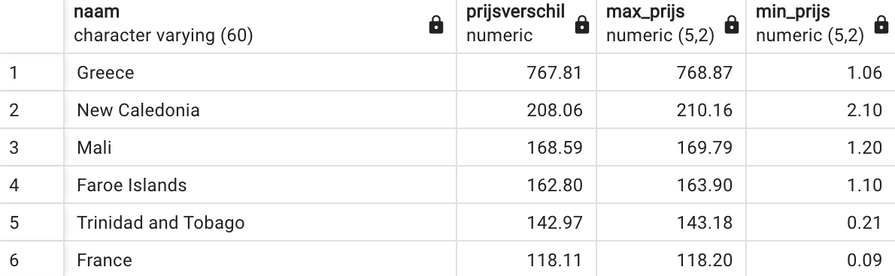
SELECT naam, max_prijs - min_prijs AS prijsverschil, max_prijs, min_prijs
FROM internetprijzen
ORDER BY 2 desc
Land op Amerikaans continent met snelste internet
Welk land op het Amerikaans continent (zowel Noord- als Zuid-Amerika)
heeft de grootste internetsnelheid. Maak een SQL query die een lijst
genereert waar je het antwoord kan aflezen.
Dit is al een uitgebreidere combinatie van AND en OR. Geen nood als je dit nog moeilijk vindt, we komen hier in het
volgend hoofdstuk in detail op terug.
SELECT naam, snelheid, regio
FROM internetprijzen
WHERE (regio = 'SOUTH AMERICA' OR regio = 'NORTHERN AMERICA') AND snelheid is not null
ORDER BY snelheid desc
Percentage internetgebruikers
Dit is een moeilijke oefening!
Bereken van elk land het percentage internetgebruikers en rangschik
zodat het land met het grootste percentage bovenaan staat. Voor het
geval je tot nu toe dacht “iedereen in ons land heeft toch
internettoegang”: België heeft een percentage van 87% … Hieronder in de
oplossing enkele tips, maar probeer de oefening eerst zonder de tips!
Een percentage is het aantal gedeeld door het totale aantal
vermenigvuldigd met 100.
Er is een probleem met de deling van twee gehele getallen. Probeer
volgende code uit:
SELECT 1 / 2
Deze deling levert een verrassende uitkomst op: 0. De reden is dat
dit een gehele deling is. Het getal 2 gaat effectief 0 keer
in 1. Probeer eens een paar andere getalcombinaties tot je snapt hoe
zo’n gehele deling werkt. Als je toch een kommagetal wil uitkomen moet
je gebruik maken van de CAST ... AS ... operator. Tik
volgende
SELECT in:
SELECT cast(1 AS float) / cast(2 AS float)
Deze SELECT berekent de deling van twee kommagetallen.
Het resultaat is nu ook een kommagetal.
We willen geen NULL waarden in de output
Maak gebruik van een alias (met AS) in de SELECT
Deze code is dan een goede oplossing:
SELECT naam, cast(internetgebruikers as float) / cast(inwoners as float) * 100 AS percentage
FROM internetprijzen
WHERE internetgebruikers / inwoners is not null
ORDER BY 2 desc
Gegevens groeperen met GROUP BY
Nu we beschikken over een voldoende grote dataset, kunnen we op een
zinvolle manier gegevens groeperen (met een technische term ‘aggregeren’),
bvb. per regio. We introduceren hiervoor de GROUP BY, bij
wijze van kennismaking. Een grondige behandeling volgt in het hoofdstuk ‘GROUP BY / HAVING’.
Volgorde waarin een query uitgevoerd wordt
Je kan ondertussen al eenvoudige query’s maken. Die query’s worden door
een databankserver in deze volgorde afgewerkt:
FROM: welke tabel(len) hebben we nodig en moeten in het
geheugen geladen worden?
WHERE: welke rijen van deze tabellen selecteren we?
SELECT: welke kolommen toon je voor het resultaat?
ORDER BY: volgens welke kolom(men) worden de rijen
tenslotte geordend?
Dat is dus verschillend van de volgorde waarin je die onderdelen schrijft!
Gegevens groeperen
Soms wil je geen individuele details meer opvragen, maar ben je enkel
geïnteresseerd in informatie over een bepaalde groep. Enkele
voorbeelden voor de tabel met de internetprijzen:
Wat is de gemiddelde internetsnelheid, minimale prijs en aantal landen
in elke regio (zie figuur)?
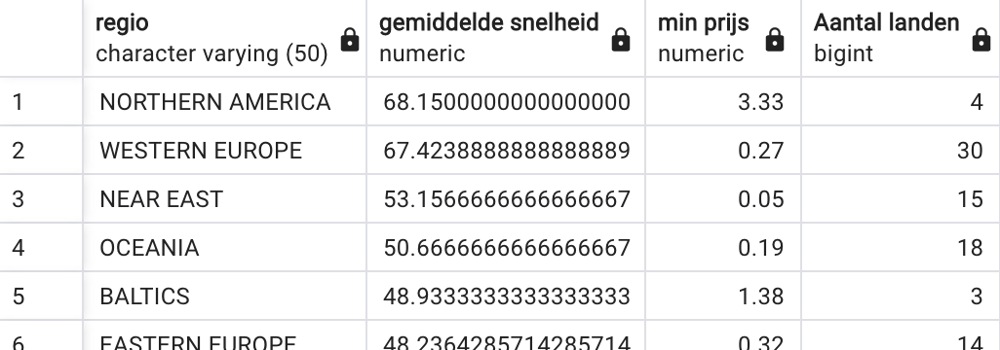
Geef een overzicht van het aantal landen per zelfde aantal
internetformules (vanaf minstens 40 internetformules) en de gemiddelde
prijs:
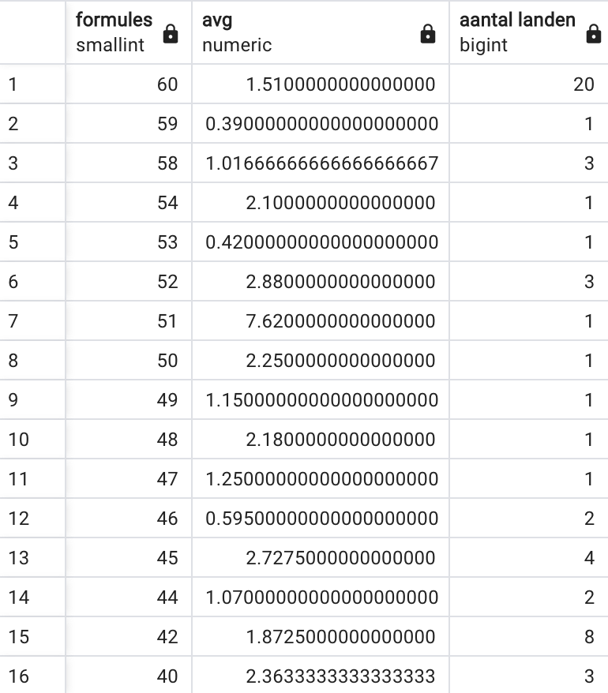
Bij wijze van voorbeeld lossen we de vraag uit het eerste voorbeeld op:
“Geef per regio een overzicht van het aantal landen in die regio, de
gemiddelde internetsnelheid en de minimale prijs.”. Je leest hier
expliciet het woordje ‘per’ en dus moeten we gegevens groeperen, in dit
geval: per regio dus GROUP BY regio. Op dit moment kan je
enkel nog de regio zelf opvragen en samenvattende getallen (aggregatiefuncties toepassen op bepaalde
kolommen). Dit geeft volgende query:
SELECT regio, AVG(snelheid), MIN(gem_prijs), COUNT(*)
FROM prijzen
GROUP BY regio
ORDER BY 2 DESC
We overlopen even stapsgewijs de uitvoering van deze query in de juiste
volgorde (dus niet de volgorde waarin de query geschreven is!):
FROM prijzen: de volledige tabel prijzen wordt in het
geheugen geladen.
Er is geen WHERE, dus er valt geen enkele rij weg.
Vervolgens komt de GROUP BY regio: alle rijen met dezelfde
regio komen in één doosje terecht. Op elk doosje komt de naam van regio
te staan. Er zullen dus evenveel dozen zijn als er verschillende regio’s
bestaan in de tabel.
Nu pas wordt de SELECT uitgevoerd. Het enige wat we nu kunnen
opvragen is het label van elk doosje (regio) en samenvattende informatie
van alle gegevens die in elke doos zitten m.b.v. aggregatiefuncties zoals
AVG(snelheid) (rekenkundig gemiddelde van alle snelheden in
elke doos), MIN(gem_prijs) (de minimale waarde van de gemiddelde
prijzen in elke doos) en COUNT(*) (het aantal rijen in elke
doos).
Tenslotte worden de rijen in het eindresultaat geordend (ORDER BY 2 DESC) van groot naar klein volgens de tweede kolom zodat de rij met de
grootste gemiddelde snelheid bovenaan staat.
Klassieke fout bij een GROUP BY
Bekijk even volgende eenvoudige query. Deze query gaat niet uitgevoerd
worden want ze bevat fouten. Wat is er mis?
SELECT *
FROM prijzen
GROUP by regio
Lees aandachtig de foutmelding die je krijgt. Die maakt duidelijk wat
er aan de hand is:
ERROR: column "prijzen.landcode" must appear in the GROUP BY clause
or be used in an aggregate function
LINE 2: select *
^
SQL state: 42803
Character: 44
Door de GROUP BY worden alle rijen met dezelfde waarde voor
het veld regio in één doosje gestopt. Van dit doosje kan je enkel nog de
naam (‘regio’) en gemiddeldes, maxima, minima, aantal en som
(de vijf aggregatiefuncties)
van sommige kolommen opvragen. Met SELECT * vraag je alle kolommen op, wat dus niet kan. Het loopt al direct fout bij de eerste kolom
(‘landcode’), vandaar de melding dat deze kolom moet voorkomen in de GROUP BY.
HAVING
In een query met GROUP BY vind je ook geregeld een HAVING. Dit lijkt een beetje op een WHERE omdat het ook een selectie
maakt en mogelijk zorgt voor gegevens die afvallen. Bekijk het volgende voorbeeld:
SELECT regio, COUNT(*), AVG(snelheid)
FROM prijzen
GROUP BY regio
ORDER BY 2 DESC
Deze query geeft een overzicht per regio van het aantal landen in die
regio en de gemiddelde internetsnelheid in die regio. De volgende figuur
toont het volledige resultaat, dalend gerangschikt volgens de tweede
kolom:
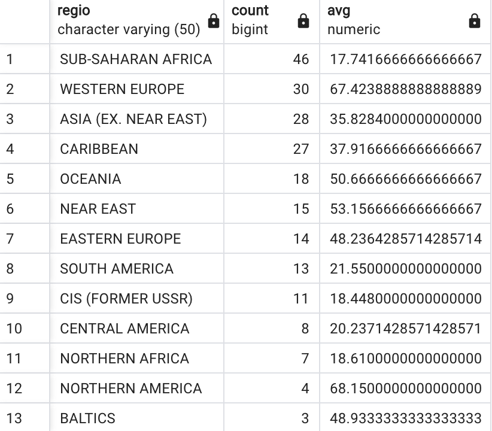
We voegen nu in de code een HAVING toe:
SELECT regio, COUNT(*), AVG(snelheid)
FROM prijzen
GROUP BY regio
HAVING COUNT(*) > 16 --nieuwe toevoeging, moet altijd achter GROUP BY staan
ORDER BY 2 DESC
De toevoeging van HAVING COUNT(*) > 16 betekent: ‘hou alleen
die doosjes (regio’s) over die meer dan 16 individuele rijen bevatten’. Het
resultaat van de query bestaat nu uit veel minder rijen:
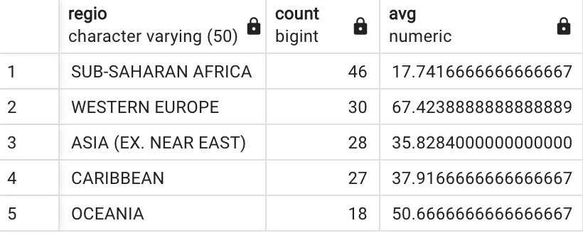
Wat is nu het grootste verschil met WHERE? De WHERE wordt uitgevoerd vlak na de FROM en voordat de GROUP BY aan bod komt. De voorwaarde achter WHERE selecteert bepaalde
rijen van de tabel (en gooit de andere weg). Daarna pas worden deze rijen in
doosjes verzameld door GROUP BY. Pas als elke rij in een
doosje zit wordt de HAVING gestart die bepaalde doosjes behoudt
en andere verwijdert.
De verschillende statements in een query worden in deze volgorde
uitgevoerd:
FROM: welke tabellen bevatten de info?
WHERE: welke rijen voldoen aan de voorwaarde? Behoud
enkel die rijen.
GROUP BY: zetten we info samen in doosjes …?
HAVING: … die aan een bepaalde voorwaarde voldoen?